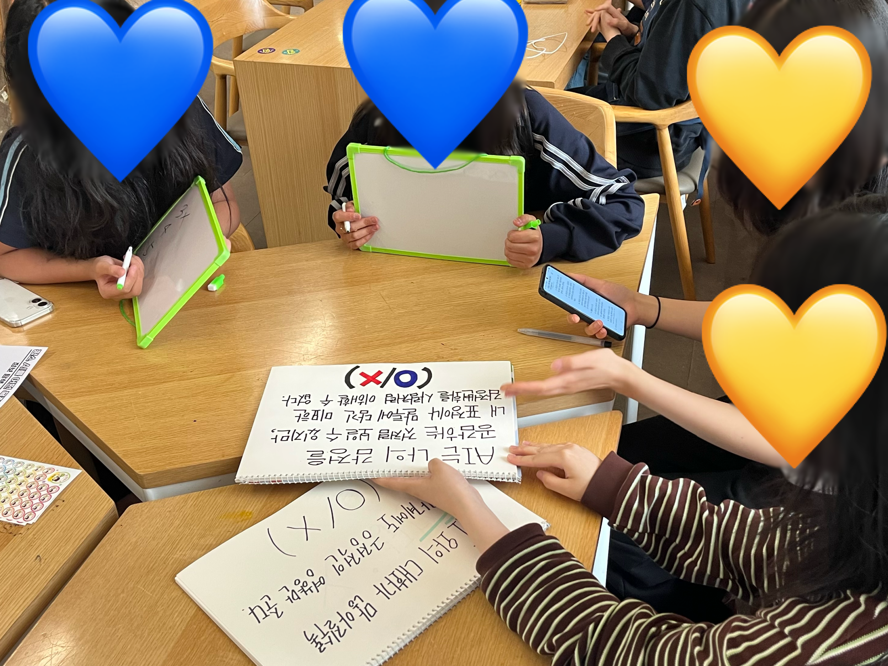
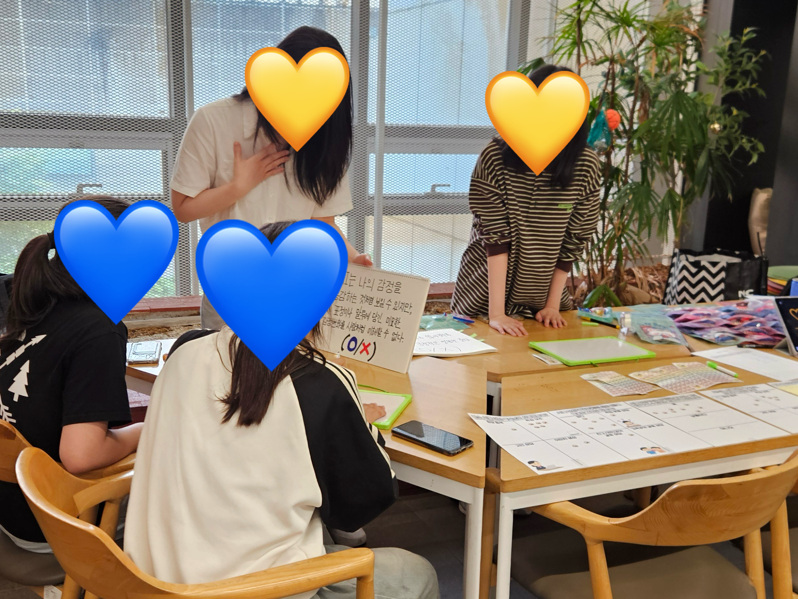
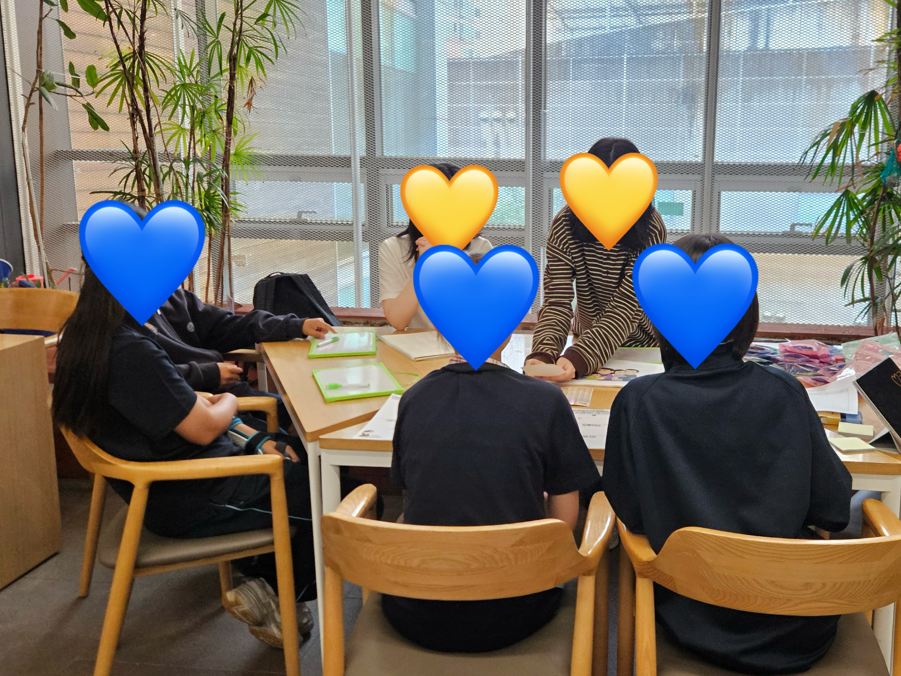
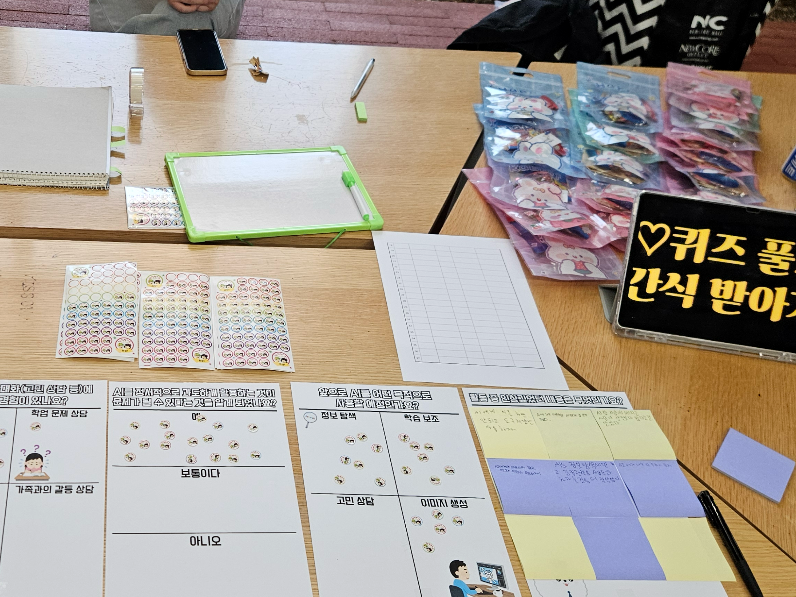

AI 챗봇은 고도화된 대형 언어 모델 기계일 뿐입니다. 우리가 챗봇에게 마음의 주도권을 통째로 내어줄 때 야기되는 위협들을 스크롤을 내리며 체계적으로 교육해보세요.
AI는 절대 화를 내지 않고 나에게 완벽하게 영합하도록 학습되어 있습니다.
언제나 부정적 평가를 내리지 않는 기계와의 대화에 지속적으로 고착되면, 생각의 격차를 조정하거나 타협이 필수적인 현실의 '진짜 인간관계'를 버겁고 무의미하게 여기는 도피적 심리가 발동하기 쉽습니다. 이는 타인과의 적극적인 의견 조율 능력과 사회적 대처 능력을 장기적으로 쇠퇴시키는 원인이 됩니다.
공감 능력이 부재한 AI 챗봇과의 과도한 정서 애착은 실재하는 보건 위협입니다.
가상 관계는 영원히 존재하지 않습니다. 기업의 경영 방침 변경이나 서버 운영 중단이라는 제삼자의 결정에 전적으로 귀속되어 있기 때문입니다. 갑자기 대화 성향이 바뀌거나 대화창이 닫혔을 때 개인이 직면하는 우울 장해는 실재하는 위험 요소입니다.
중국의 대표적인 가상 대화 앱이 운영 악화로 서비스 제공 규칙을 변동하면서, AI 연인과 갑작스럽게 사별하여 극심한 상실감과 우울증을 호소하는 이른바 '사이버 과부' 증상 속출.
국제의학학술지에 따르면 10대 집단 중 외로움 해소를 위해 AI를 매일 찾는 비율이 증대하고 있으며, 기계 특유의 아첨 편향 대화는 단기 위안을 줄 뿐 실질적 관계 능력은 퇴화시킨다고 진단함.
24시간 오직 나만을 기다리는 응답성이 관계 고립을 고착화합니다.
현실 세계의 불완전한 소통이나 오해를 조율하기 위한 에너지를 포기한 채, 오직 내 말에 즉각 맞추는 디지털 세계로만 숨어드는 도피성 고립이 심화됩니다. 이는 만성적인 사회성 결여 및 정서 자립의 상실로 수렴됩니다.
문항별 가중치가 적용된 6단계 정밀 자가진단 퀴즈로 여러분의 의존성 수치를 직접 파악해보세요.
기계에 대한 무조건적 신뢰는 보안 경계심의 붕괴를 야기합니다.
AI 챗봇을 내 마음을 완전히 열어놓아도 되는 안전한 '디지털 일기장'으로 과대 인지하게 될 경우, 절대 타인에게 발설해선 안 될 금융 정보, 비즈니스 기밀, 사생활의 비밀 기억까지 고스란히 털어놓게 됩니다. 모든 문장은 대형 모델 개발 서버에 정제 및 백업되어, 시스템 데이터 침해 사고 발생 시 무방비하게 유출될 위험성을 지닙니다.
문항별 심각도 가중치를 반영한 6가지 수치를 통해 당신의 디지털 소통 균형을 정교하게 분석합니다.
올바른 인간 중심의 AI 기술 활용 문화 구축을 위해 행동하는 SWUnion 프로젝트 팀원들을 소개합니다.
기술은 인간을 돕는 도구여야 한다는 믿음으로, 저희 팀은 단순한 개발을 넘어 사회적 책임을 다하는 다양한 활동을 전개해왔습니다.
10대 학생들과 직접 소통하며 AI 정서 의존의 위험성을 알렸습니다.
AI 챗봇의 올바른 사용을 위한 윤리적 가이드라인을 부스 활동 중 배포하였습니다.



